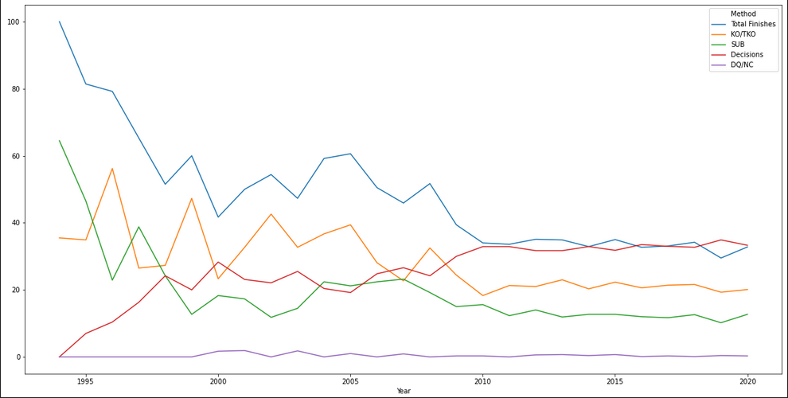

UFC Fight Data Analysis
This was a project undertaken as part of a course on data science, where we were given the prompt of finding an interesting dataset, analyzing that data set using various data science libraries and methods, and creating graphical representations that would provide insight on the topic of the dataset.
Background
We wrote a python script that scraped the data for over 500 UFC fights from multiple web sources, and compiled the data into a csv file. Using a python notebook, we then broke down the data based on different parameters, such as how or when the fight finished, and used the resulting data groups to train a statistic model for representing the probability of fight finishing along a timeline.